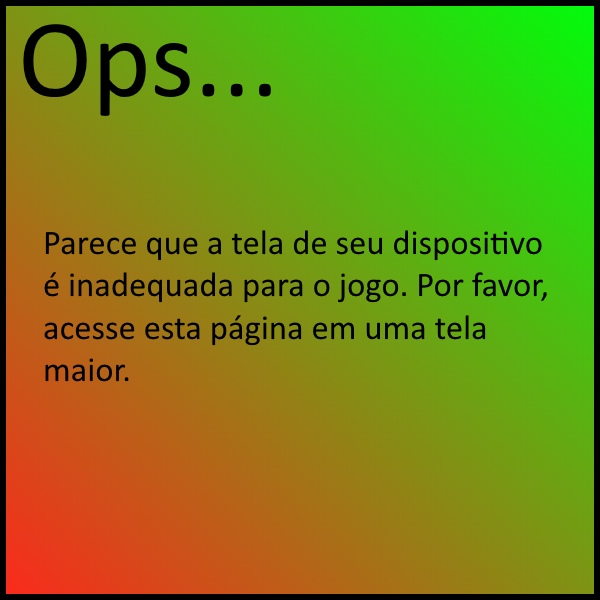

Jogo feito especialmente para o Agrinho 2024, por Nicolas Gomes Souza.
Controles
Botão direito do mouse para atirar defensivos e interagir com menus.
Objetivo
Seu objetivo é proteger a plantação antes que os insetos a devorem por completo. Lembre-se, quanto mais tempo você sobrevive, mais insetos virão.
(!!!) A vida é representada através da claridade da(s) planta(s), quanto mais escuro ela(s) estiver(em) menos vida ela(s) tem.